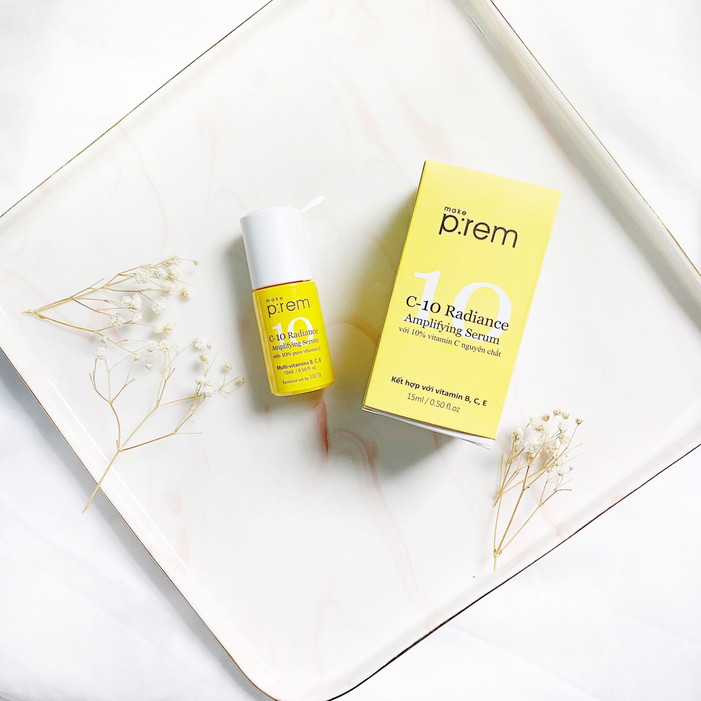
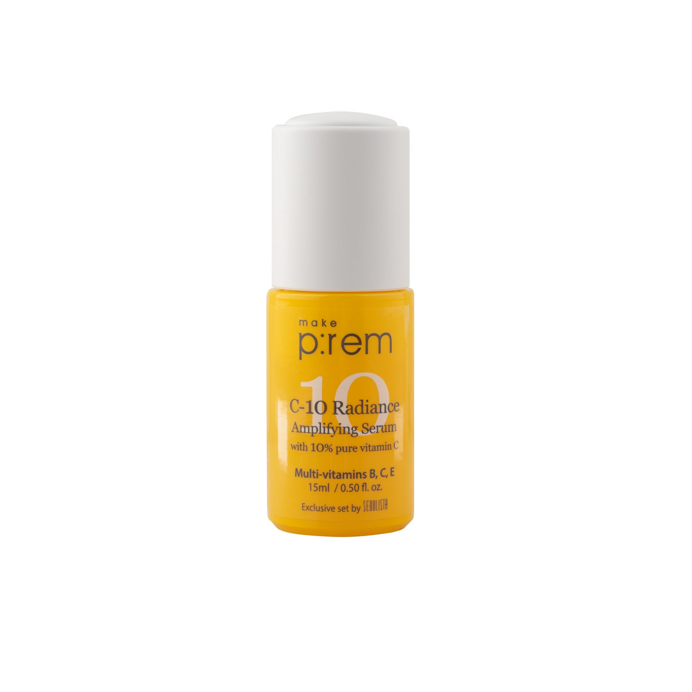
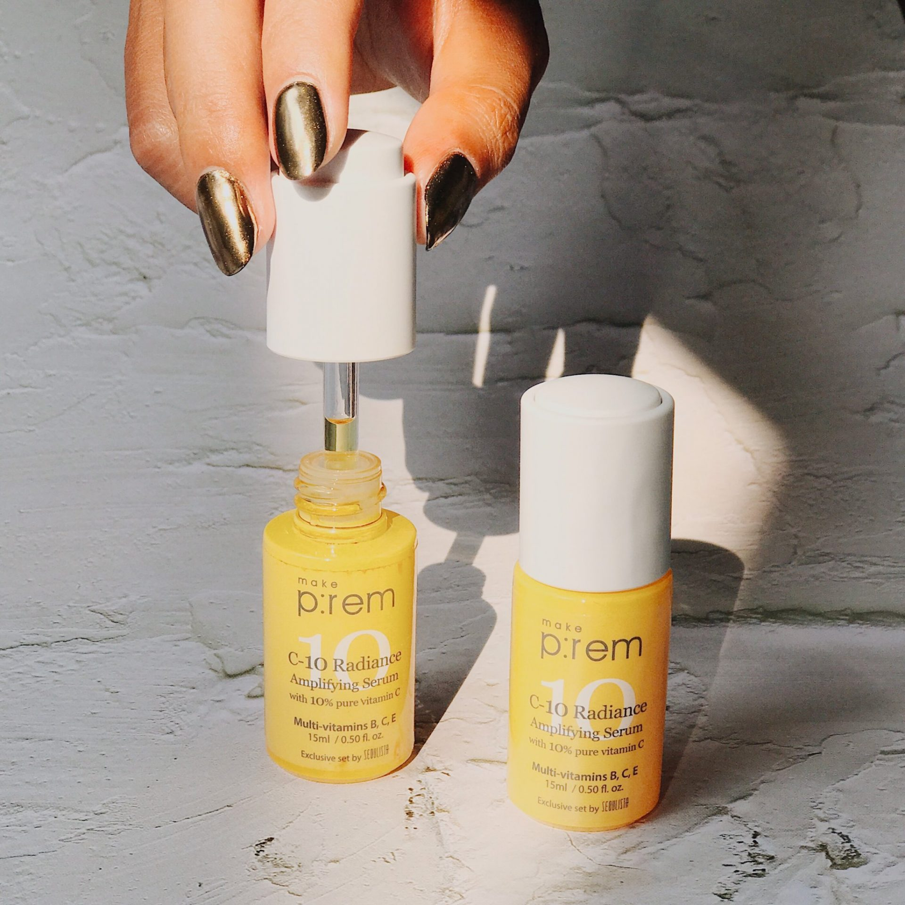
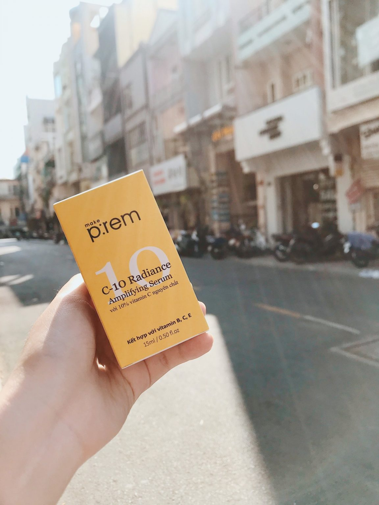

Mình đã từng nghĩ da bị break out thì chỉ nên chú trọng làm sạch và không nên sử dụng bất sản phẩm dưỡng nào cả vì sợ sẽ gây bít tắc lỗ chân lông làm tình trạng mụn thêm tệ hơn. Cho đến khi gặp được em Vitamin C Make P:rem C-10 Radiance Amplifying Serum này thì mọi thứ đã thay đổi từng ngày.
Vitamin C là một thành phần cực kỳ quen thuộc đối với những người quan tâm đến lĩnh vực chăm sóc da. Việc bổ sung chất chống oxy hóa như vitamin C vào chu trình dưỡng da không chỉ giúp bảo vệ sức khỏe làn da trước những tác nhân tiêu cực mà còn mang đến sự tươi trẻ cho làn da.
Chính vì vậy ngay khi thương hiệu Make P:rem cho ra mắt tinh chất vitamin C Make P:rem C-10 Radiance Amplifying Serum, mình đã rất mong chờ khi sản phẩm này nhận được nhiều đánh giá tích cực trên website Glowrecipe của Mỹ.

Và không làm mình thất vọng, Tinh chất Vitamin C của Make P:rem đã mang đến hiệu quả bất ngờ đối với làn da có phần “đỏng đảnh” của mình.
Đầu tiên mình xin phép được giới thiệu về tình trạng da của mình nhé :
Vì da thuộc loại nhạy cảm, lại còn đang trong giai đoạn break- out và hoàn toàn chưa hết sạch mụn ẩn nên mình cực ái ngại trong việc thay đổi cũng như cho thêm một sản phẩm mới trong skincare routine. Sau khi nghiên cứu kĩ bảng thành phần của em Vitamin C Make p:rem C-10 Radiance Amplifying Serum này mình cũng đánh liều thử một phen bằng cách dùng thử trước với vùng trán và cằm (vùng cằm ít mụn ẩn hơn so với hai vùng má). Hãy cùng mình khám phá em này ngay thôi nào!
1.thông tin chung về sản phẩm

– Tên đầy đủ: Make P:rem C-10 Radiance Amplifying Serum
– Định lượng: 15ml
– Nếu như lê la trên các group làm đẹp, hay theo dõi kênh youtube của các beauty blogger xứ kim chi hay chỉ đơn giản là chăm search google về cụm từ “Make P:rem” thì chắc hẳn các bạn sẽ thấy hàng loạt review về hãng này. Trong đó hầu hết các lời khen có cánh dành cho sản phẩm kem chống nắng, kem dưỡng, tẩy trang, sữa rửa mặt… của hãng này.
Chính vì vậy, sản phẩm Vitamin C của Make P:rem ngay từ khi ra mắt đã được rất nhiều người háo hức mong đợi. Và mình cũng không ngoại lệ khi hy vọng em ý sẽ hiệu quả với da của mình. Sản phẩm Make P:rem C-10 Radiance Amplifying Serum chỉ được bán tại Glowrecipe của Mỹ và ở Việt Nam thì có Seoulista nha.
2. Về thiết kế Make P:rem C-10 Radiance Amplifying Serum

Ấn tượng đầu tiên là hộp nhựa cứng màu vàng nhỏ xinh, bao bì C-10 Radiance Amplifying Serum được sử dụng cả Tiếng Anh và Tiếng Việt. Toàn bộ công dụng, cách sử dụng đều được in lên sản phẩm hoàn toàn bằng Tiếng Việt nha, thật ngạc nhiên đúng không nào?
Thường thì các serum khác thì phần nắp được thiết kế bằng chất liệu cao su mềm còn đối với em này thì phần nắp được làm bằng nhựa cứng màu trắng được gắn với ống nhỏ và đi liền là nút ấn trên đỉnh nắp.
Mỗi khi dùng chỉ vặn nhẹ phía đầu nắp là sẽ thấy serum tự được bơm lên, làm đầy trong ống hút, có thể điều chỉnh lượng tinh chất serum bằng nút ấn ở phía đỉnh nắp. Mình thấy thiết kế này vô cùng thuận tiện và gọn gàng nhưng cũng không vì thế mà lơ là trong việc đậy nắp và bảo quản để tránh Vitamin C bị oxy hóa nhé.
Phải công nhận là Make P:rem và nhà độc quyền có sự đầu tư và chăm chút vô cùng kỹ lưỡng trước khi launching sản phẩm này. Khi mua em này mình được tặng kèm kem chống nắng Make P:rem UV Defense me. Blue ray sun cream 20ml (đến cả kem chống nắng minisize này cũng được hãng in thông tin, cách sử dụng và địa chỉ nơi bán độc quyền trên sản phẩm luôn) với những tín đồ mê đồ skincare Hàn Quốc thì đây chính là thực sự thích thú đúng không nào?
3. Về màu mùi, kết cấu
Kết cấu dạng lỏng, màu vàng nhạt, sau khi thoa serum và vỗ nhẹ thì thấy thấm nhanh không hề gây nhờn cho da . Khi mở nắp sẽ cảm nhận được mùi cam phảng phất, ban đầu mình không biết mùi hương này có phải do hương liệu hay không nhưng khi đọc và nghiên cứu bảng thành phần thì hoàn toàn yên tâm.
4. Về thành phần của Make P:rem C-10 Radiance Amplifying Serum

Các bình luận trên website của hãng cũng như ở Glowrecipe khen em này cực kì, bảng thành phần còn được coi là “công thức vàng” hoàn hảo cho da, làm mình càng cực kì hiếu kì. Cùng mình bóc tách “công thức vàng” ra sao nha:
Nếu bạn nào là tín đồ skincare thì chắc hẳn sẽ biết đến Vitamin C hay còn gọi là là một trong những thành phần quan trọng nhất trong các sản phẩm dưỡng da. Vitamin C được chứng minh có khả năng tăng cường khả năng sản sinh ra collagen và là chất chống oxy hóa mạnh nhất cho da.
Còn đối với Make P:rem C-10 Radiance Amplifying Serum thì lại chứa đến 10% Vitamin C nguyên chất sẽ có khả năng chống oxy hóa cho da, giúp làm da sáng và đều màu hơn, đồng thời giúp làm giảm rõ rệt các dấu hiệu lão hóa sớm.
Cũng như các loại Vitamin A, C, E, Vitamin B cũng có vai trò rất quan trọng trong việc chống lão hóa cho da. Còn em Make P:remC-10 Radiance Amplifying Serum này lại hoàn hảo khi kết hợp Vitamin C và 7 loại Vitamin B giàu dưỡng chất.
Bao gồm: Panthenol (B5), Niacinamide (dẫn xuất của B3), Folic Acid (B9), Pyridoxine (B6), Thiamine HCL (B1), Cyanocobalamib (B12), Biotin (B7).
Trong đó, nổi bật nhất là Vitamin B5/Panthenol giúp làm dịu, củng cố hàng rào bảo vệ da và cấp nước cho da và điều tuyệt vời hơn cả là khả năng kiểm soát bã nhờn, tự điều chỉnh độ tiết dầu của da, ngăn ngừa hình thành mụn trứng cá.
Bên cạnh đó là Vitamin B3/Niacinamide là vitamin tiềm năng nhất trong nhà Vitamin B giúp da sáng, mờ thâm và căng mọng. Công thức 10% axit L-ascorbic + Niacinamide sẽ giúp tăng hiệu quả làm trắng da và mờ thâm, nám và tàn nhang.
Đây là chất chống oxy hóa cao, có khả cấp ẩm sâu và cung cấp dưỡng chất cho da. Công thức Vitamin C + Vitamin E trong Tinh chất C10 Make P:rem sẽ tăng hiệu quả chống oxy hóa lên gấp nhiều lần so với việc chỉ sử dụng Vitamin C.
Nhờ vậy, mình hoàn toàn yên tâm về việc tinh chất Vitamin C không tự nhiên bị oxy hóa nhanh! Tụi mình vẫn có thể hưởng tác dụng tốt nhất từ vitamin này mà vẫn không cần quá lo lắng vì tính ổn định của nó.
5. Kết quả
ở đây thiếu 1 ảnh
Khi chưa sử dụng Vitamin C của Make P:rem thì da mình vẫn còn mụn, nhiều thâm và vì thế nên mình đã ưu tiên thử em này với trán trước. Chỉ sau khoảng 2 tuần là mình thấy hiệu quả khá rõ rệt khi các vết thâm trên vùng trán đã mờ đi rất nhiều, thậm chí những vết thâm từ rất lâu rồi cũng mờ dần đi.
Ban đầu mình khá là e dè khi cân nhắc việc có nên sử dụng Vitamin C vào thời gian này không. Nếu bạn nào đang bị break out như mình thì mình recommend nên thử với từng vùng da như trán và cằm trước nhé (đối với mình thì 2 vùng này còn ít mụn và thâm).
Tuần đầu tiên mình chỉ dùng với trán và cằm, đến tuần thứ 2 mình bắt đầu sử dụng toàn bộ mặt (lúc đó cũng hơi lo lắng một chút vì 2 bên má còn khá nhiều mụn). Mình nghĩ có thể do mình chưa từng sử dụng Vitamin C bao giờ nên mấy ngày đầu khi dùng em ý cho trán và cằm thì cảm giác hơi châm chích một tẹo lúc vừa apply xong, nhưng sau đó cảm giác châm chích lại qua đi rất nhanh và không hề thấy có dấu hiệu kích ứng gì cho da của mình cả.
Sau 2 tuần mình sử dụng thì thấy những vùng da đang có mụn và thâm thì không nổi thêm chiếc mụn nào nữa, vết thâm sau mụn mờ dần. Còn những vùng da khác thì trở nên căng bóng và đều màu hơn.
Không biết có phải do da mình đang gặp tình trạng về mụn nên mình khá để ý đến việc ăn uống, sinh hoạt hay không nữa. Nhưng đối vùng da còn mụn ở 2 má thì sau 1 tuần dùng Vitamin C thì mình thấy trộm vía là các nốt mụn đỏ xẹp và lành dần.
Công cuộc dưỡng da đặc biệt là đối với những bạn da mụn thì khá là gian nan nên chúng mình cần kết hợp cả bên trong lẫn ngoài để giúp da mau khỏe nha.
Da vẫn còn mụn nên mình đã tối giản các bước skincare đến mức có thể nhất. Buổi tối sau bước toner thì mình sử dụng Vitamin C, sau đó dùng thêm kem dưỡng để khóa ẩm lại để có thể phát huy hiệu quả của Vitamin C được tối đa. Buổi sáng thì sau khi apply toner và Vitamin C thì mình dùng thêm kem chống nắng ngay sau đó.
Một lưu ý nho nhỏ là nếu sử dụng Vitamin C vào ban ngày thì các bạn nhớ dùng kem chống nắng để tránh gây kích ứng khi sử dụng nha. Đó cũng chính là lí do tại sao từ Hãng và Nhà phân phối lại sản xuất set đặc biệt Vitamin C tặng kèm kem chống nắng Make P:rem UV Defense me. Blue ray sun cream 20ml.
Nếu ai theo dõi Make P:rem thì sẽ biết đây chính là kem chống nắng bán chạy nhất của hãng, bạn nào muốn dùng thử mini size của loại kem chống nắng này thì mình nghĩ việc mua một em Vitamin C này là một lựa chọn lý tưởng, đáng đồng tiền bát gạo đó.
Với những hiệu quả trên da mình, mình thực sự đã có cái nhìn khác về chu trình skincare hàng ngày đặc biệt là sử dụng Vitamin C khi đang bị mụn và thâm. Thay vì việc chỉ chữa trị bên trong bằng cách thay đổi sinh hoạt và ăn uống thôi thì mình đã thực sự chú trọng đến routine skincare trong quá trình điều trị mụn.
Chắc hẳn đây là sẽ là sản phẩm nhận được rất nhiều sự yêu thích từ các tín đồ skincare. Cũng không quá ngạc nhiên khi Vitamin C C-10 Radiance Amplifying Serum luôn nằm sản phẩm bán chạy trên Glowrecipe của Mỹ và được Seoulista độc quyền mang về Việt Nam phải không nào?
Hi vọng rằng với những chia sẻ, review của mình sẽ có ích cho các bạn đặc biệt là những bạn nào đang gặp vấn đề về mụn nhưng còn đang lăn tăn về Vitamin C. Hãy chia sẻ ngay bên dưới về những trải nghiệm đối với em Vitamin C này các bạn nhé